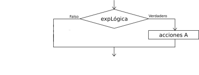
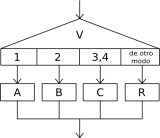

2: Interactivitat i Control de Flux
2.1. La Funció print()
La funció print() és l'eina principal en Python per a comunicar resultats i mostrar informació en la pantalla de l'usuari (coneguda com l'eixida estàndard). Ens permet veure el resultat de les nostres expressions, el valor de les nostres variables o simplement mostrar missatges de text.
El seu ús més bàsic consisteix a passar-li el valor que volem mostrar:
print("Hola mundo") # Mostra el text Hola mundo
fahrenheit = 91
celsius = (fahrenheit - 32) * 5/9
print(celsius) # Mostra el valor de la variable celsius
També és possible imprimir múltiples elements en una sola crida a print(), separant-los per comes. Per defecte, Python els mostrarà en la mateixa línia, separats per un espai.
episodio = 3
print("Episodio", episodio, "del libro")
# Eixida: Episodio 3 del libro
La funció print() inclou paràmetres opcionals que ens permeten modificar el seu comportament per defecte:
sep=str: Aquest paràmetre permet canviar el separador que s'usa entre els elements. En lloc de l'espai per defecte, podem usar qualsevol altra cadena de text.end=str: Per defecte, cada crida aprint()acaba amb un salt de línia. El paràmetre end permet especificar un caràcter o cadena de text diferent per al final, la qual cosa possibilita que la següent crida aprint()continue en la mateixa línia.
Mostrar informació és útil, però per a crear programes verdaderament dinàmics, també necessitem que puguen rebre informació de l'usuari.
2.2. La Funció input()
La funció input() és fonamental per a crear programes interactius. Deté l'execució del programa, mostra un missatge a l'usuari (si se li'n proporciona un) i espera que aquest escriga alguna cosa amb el teclat i prema Enter.
La sintaxi bàsica per a llegir l'entrada de l'usuari i emmagatzemar-la en una variable és:
variable = input(texto)
Ací, text és el missatge opcional que es mostrarà a l'usuari per a indicar-li quina dada ha d'introduir.
Un punt crític a recordar és que la funció input() sempre torna les dades introduïdes per l'usuari com una cadena de text (str), sense importar si l'usuari va escriure nombres. Intentar realitzar operacions matemàtiques directament amb l'eixida d'input() resultarà en un TypeError.
Per a poder treballar correctament amb l'entrada de l'usuari, és necessari realitzar una "conversió de tipus". Python proporciona funcions per a convertir un valor d'un tipus a un altre:
int(): Converteix un valor a un nombre enter-
float(): Converteix un valor a un nombre de punt flotant -
bool(): Converteix un valor a un booleà
Podem combinar input() amb aquestes funcions per a llegir i convertir les dades en un sol pas:
lec = int(input("¿Cuántas lecciones has visto? "))
total = 15
faltan = total - lec # Ara això funciona, perquè 'lec' és un int
print("Te faltan", faltan, "lecciones. ¡Ánimo!")
# Resultat per pantalla:
# ¿Cuántas lecciones has visto? 3
# Te faltan 12 lecciones. ¡Ánimo!
Ara que el nostre programa pot rebre una qualificació, un nom o una temperatura de l'usuari, com podem fer que reaccione de manera intel·ligent a aquesta informació? La resposta està en les estructures condicionals.
2.3. Estructures Condicionals
Les estructures condicionals són la base de la presa de decisions en programació. Permeten que un programa avalue una condició (una expressió que resulta ser True o False) i execute diferents blocs de codi depenent del resultat. Això li dona al programa la capacitat de reaccionar de manera diferent a distintes entrades o situacions.
if-else

Aquesta és l'estructura condicional més completa. Avalua una condició (expressió lògica): si és True, executa el bloc de codi que segueix a l'if; si és False, executa un bloc de codi alternatiu dins de la clàusula else.
La sintaxi requereix que els blocs de codi estiguen indentats (generalment amb 4 espais o tabulat) per a indicar que pertanyen a l'estructura.
# Sintaxi
if <condición>:
# Bloc de codi si la condició és True
else:
# Bloc de codi si la condició és False
# Exemple
llueve = True
if llueve == True:
print("Llevaré paraguas")
else:
print("No llevaré paraguas")
# Resultat: Muestra "Llevaré paraguas"
if sense else

El bloc else és completament opcional. Un if pot existir per si sol. En aquest cas, el bloc de codi indentat s'executarà únicament si la condició és True. Si la condició és False, el programa simplement saltarà aquest bloc i continuarà amb la següent instrucció fora de l'if.
charco = True
if charco == True:
print("A saltar!")
print("Fin de la caminata") # Aquesta línia s'executa sempre en estar fora de l'if
Cal destacar que no pot existir una clàusula else sense una instrucció if que la preceda.
elif
Quan necessitem avaluar més de dos possibles camins, podem encadenar múltiples condicions usant elif (contracció de "else if"). El programa avalua les condicions en ordre: la primera que resulte True executarà el seu bloc de codi, i la resta de l'estructura elif/else serà ignorada. El bloc else final és opcional i actua com un cas per defecte si cap de les condicions anteriors va ser True.
# Sintaxi General
if <condicion1>:
# ...
elif <condicion2>:
# ...
elif <condicion3>:
# ...
else:
# ...
# Exemple
temperatura = 15
llueve = True
if temperatura >= 18:
print("No llevaré paraguas ni abrigo")
elif llueve == True:
print("Llevaré paraguas y abrigo")
else:
print("Solo llevaré abrigo")
# Resultat: Mostrará "Llevaré paraguas y abrigo"
match-case
És una estructura que permet comparar un valor contra diferents patrons i executar el bloc de codi corresponent al primer patró que coincidisca.

És similar al switch d'altres llenguatges, però més flexible.
match <variable>:
case <patron1>:
# codi si coincideix patron1
case <patron2>:
# codi si coincideix patron2
case _:
# cas per defecte
Python avalua els case en ordre i executa el primer que coincideix. El case _ funciona com l'else d'un if (per defecte, si no es compleix cap dels anteriors).
L'estructura match-case serveix per a evitar molts if / elif / else i fer el codi més llegible.
valor = int(input("Dame un entero: "))
match valor:
case 1:
print ( "Uno" )
case 2:
print ( "Dos" )
case 3:
print ( "Tres" )
case _:
print ( "Otro valor" )
En un match-case es poden posar més d'un valor, separant amb “|”.
valor = int(input("Dame un entero: "))
match valor:
case 1 | 2:
print ( "Uno o Dos" )
case 3:
print ( "Tres" )
case _:
print ( "Otro valor mayor que 3" )
Prendre decisions és poderós, però què passa quan necessitem que el nostre programa realitze una acció una vegada i una altra?
EXERCICI
Escriu un programa que demane la temperatura actual i mostre els missatges “Fa calor”, “Fa fred” o “Temperat” segons les següents casuístiques:
- > 30º: Fa calor
- < 10º: Fa fred
- altre: Temperat
Quina és la temperatura?: 7
Fa fred
Quina és la temperatura?: 33
Fa calor
Quina és la temperatura?: 25
Temperat